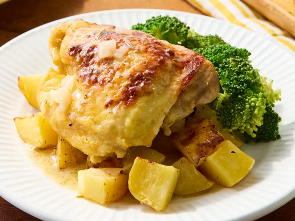
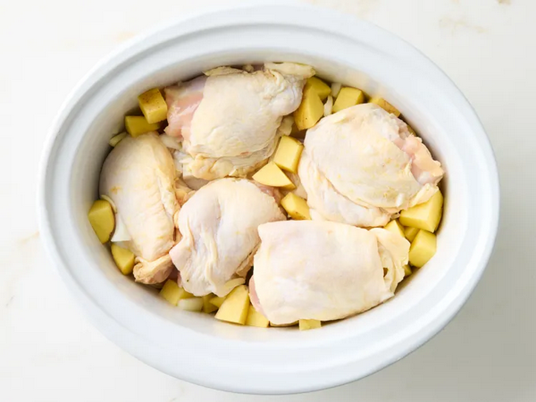
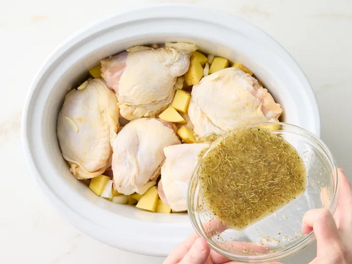
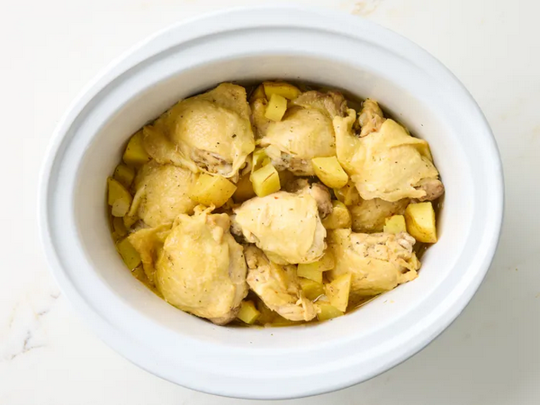
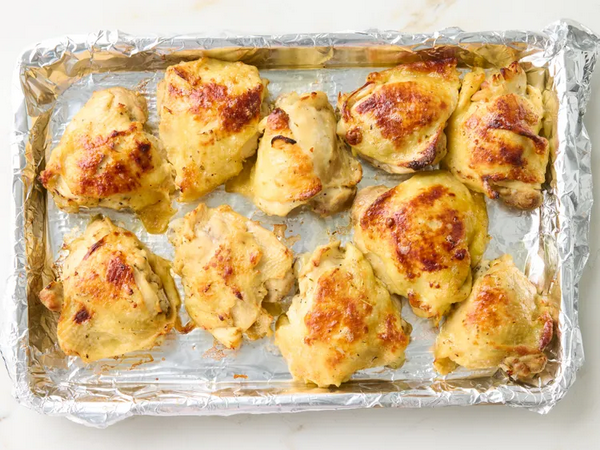
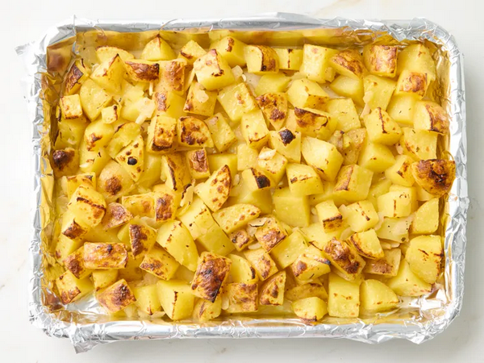
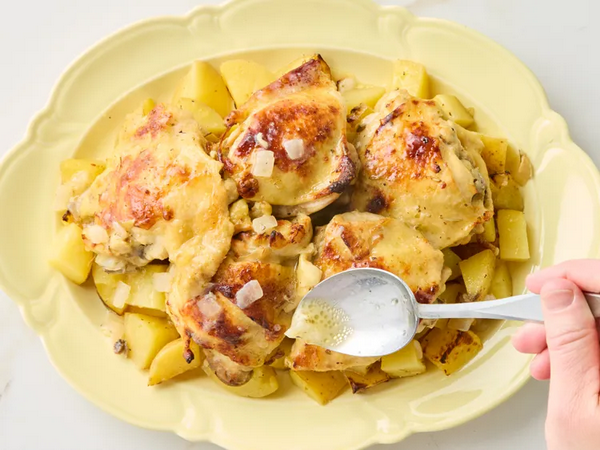

Home
Slow Cooker Greek Lemon Chicken and Potatoes

This slow cooker Greek lemon chicken and potatoes recipe comes together quickly—the slow cooker does most of the work.
Both chicken and potatoes come out tender and flavorful and have a robust lemon flavor.
Ingredients
- 4 pounds skin-on, bone-in chicken thighs
- 2 pounds Yukon gold potatoes, scrubbed and cut into 3/4-inch pieces
- 1 cup coarsely chopped sweet onion
- 6 cloves garlic, sliced
- 1/2 cup lemon juice
- 1/4 cup olive oil
- 1 tablespoon Dijon mustard
- 2 teaspoons dried oregano
- 1 teaspoon dried rosemary
- 1/2 teaspoon salt
- 1/2 teaspoon freshly ground black pepper
- 1/8 teaspoon crushed red pepper
- 1 teaspoon lemon zest, plus more for garnish
Steps
- Combine chicken, potatoes, onion, and garlic in a 6-quart slow cooker.

- Whisk together lemon juice, olive oil, Dijon mustard, oregano,
rosemary, salt, pepper, and crushed red pepper in a small bowl.
Drizzle over chicken and vegetables and toss to coat.

- Cover and cook on Low for 6 to 7 hours or on High for 2 ½ to 3 ½ hours,
or until an instant-read thermometer inserted into the thickest part of a chicken thigh reads at least 165 degrees F
(74 degrees C).

- Optional step (to brown chicken and potatoes): Preheat the broiler. Line a rimmed baking sheet with aluminum foil.
Transfer chicken thighs to the prepared baking sheet and place 4 to 5 inches from the heat.
Broil until browned, 2 to 3 minutes.
Transfer to a serving dish.

- Transfer vegetables with a slotted spoon to the baking sheet.
Broil until browned, 2 to 3 minutes. Add to the serving dish with the chicken.

- Drizzle with cooking liquid. Garnish with lemon zest.
